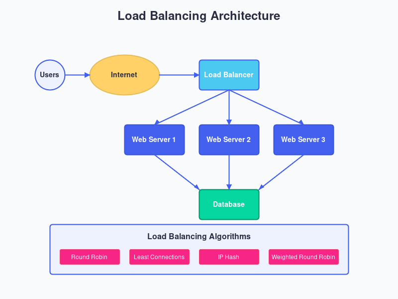

Master System Design
From Fundamentals to Advanced Concepts
Learn how to design scalable, reliable, and high-performance systems that can handle millions of users. Explore real-world examples and implementation strategies used by tech giants.

Learn how to design scalable, reliable, and high-performance systems that can handle millions of users. Explore real-world examples and implementation strategies used by tech giants.
A comprehensive approach to mastering system design
Learn the core concepts of system design including scalability, reliability, availability, and performance. Understand the building blocks that make up modern distributed systems.
Explore FundamentalsAnalyze how tech giants like Amazon, Netflix, and Uber designed their systems to handle massive scale. Learn from real-world architectures and design decisions.
View ExamplesDive into practical implementation details of system design components. Learn how to implement load balancers, caching systems, database sharding, and more.
Start ImplementingTest your knowledge with interactive exercises, quizzes, and system design challenges. Apply what you've learned to solve real-world problems.
Try ExercisesMaster the essential principles that power modern systems
Learn how to design systems that can handle growing workloads by adding resources. Explore horizontal and vertical scaling strategies.

Understand how to build systems that continue to work correctly even when things go wrong. Explore fault tolerance and redundancy.
Master the techniques for horizontally partitioning data across multiple database instances to improve performance and scalability.

Learn how to implement caching strategies to reduce latency and database load. Explore different caching patterns and eviction policies.

Follow our structured approach to master system design
Start with the fundamental principles that form the foundation of all system designs.
Learn how to design systems that can grow to handle increasing loads.
Discover techniques to build systems that are resilient to failures.
Learn strategies to optimize system performance and reduce latency.
Apply your knowledge to analyze and design systems for real-world scenarios like social networks, e-commerce platforms, and streaming services.
Hear from those who've mastered system design with us
Designed for engineers who want to build scalable systems